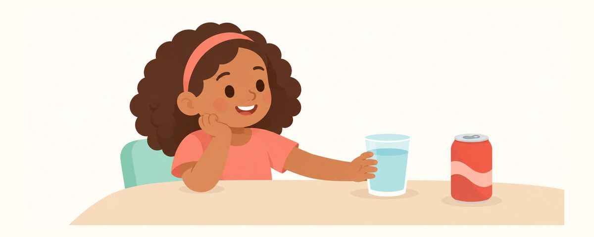

Soda, Sports Drinks, Energy Drinks, and Tooth Erosion: Why Sugar-Free Isn't Safe
Soda, sports drinks, and fruit juice wear away teeth with acid, even sugar-free ones. How erosion works, how to drink smarter, and signs to see the dentist.
At a glance
- Soda and sports drinks wear teeth down, even sugar-free ones
- If your child has one, serve it with a meal, through a straw
- Don't brush right after. Wait about an hour
As kids get older, they start buying soda and sports drinks on their own more often. It's easy to think, "It's sugar-free, so it's fine." But for teeth, acid is just as much of a problem as sugar. Here's how acidic drinks harm teeth, and how to drink them in a way that's easier on teeth if your child has them. It's a good one to read together with your child.
Why teeth wear away even without sugar
Cavities and erosion may look alike, but they happen in different ways:
- Cavities form when bacteria in the mouth feed on sugar and make acid that dissolves the tooth.
- Erosion happens without bacteria, when acid in drinks or food directly dissolves the tooth surface little by little.
Soda, sports drinks, energy drinks, and fruit juice are all acidic. So even sugar-free drinks wear teeth down just the same if they contain acid. Words like "zero" or "sugar-free" don't mean a drink is safe for teeth.
What makes erosion tricky is that it happens quietly and slowly. At first it doesn't hurt, so it's easy to miss. Once it has gone on for a while, you may see changes like these:
- The teeth look yellowish. As the white outer enamel thins, the color underneath shows through.
- The edges of the front teeth thin out and look see-through.
- Cold foods make the teeth hurt.
And once enamel wears away, it doesn't grow back. So the best approach is to build good habits before the damage happens.
With erosion, how your child drinks matters as much as how much. With the same can, finishing it in one go keeps the teeth in contact with acid for a short time. Leaving it on the desk and sipping for a long time bathes the teeth in acid the whole time.
Drinking this way is easier on teeth
For everyday drinks, water or milk is all your child needs. Even after sports, water is usually enough. There's no need to make a sports drink a habit every time your child plays.
If your child does have one, here's how:
- Have it all at once with a meal. During meals, the mouth makes more saliva, which helps wash the acid away.
- Don't carry it around and sip it over a long time.
- Use a straw so less of the drink touches the teeth.
- Rinse the mouth with water afterward.
- Don't brush right after. Wait about an hour before brushing.
There's a reason not to brush right away. Right after contact with acid, the tooth surface is softened for a while. Scrubbing it with a toothbrush then wears the weakened surface away more easily. It's better to rinse with water and brush about an hour later.
Energy drinks aren't recommended for children. Beyond the acid damaging teeth, they simply aren't a suitable drink for kids.
A common mistake is offering fruit juice instead of soda and feeling reassured. Fruit juice is also acidic, so drinking it often and slowly is hard on teeth. If you do serve it, follow the same tips as with soda and serve it all at once with a meal.
Once kids are old enough to choose their own drinks, explaining why works better over time than a flat ban. Just remembering two things, "Acid wears teeth down even without sugar" and "Worn teeth don't grow back," changes how they choose. It also helps to make good choices easy, like packing a water bottle in their bag or putting water and milk front and center in the fridge.
Frequently asked questions
Isn't sugar-free soda okay?
It may lower the cavity risk, but the erosion stays the same. Erosion is caused by acid, not sugar, so pay the same attention to how often and how your child drinks sugar-free drinks.
Doesn't my child need a sports drink after exercise?
Even after exercise, water is enough. Sports drinks are also acidic, so having one every time is hard on teeth.
Isn't it cleaner to brush right after drinking?
Right after contact with acid, the tooth surface is weakened for a while, so scrubbing right away can wear it down more. Rinse with water first, and brush about an hour later.
Can teeth that have already worn down recover?
Once enamel wears away, it doesn't grow back. That's why it's important to keep it from wearing down further. If you notice changes, have the dentist check the teeth and talk about how to care for them.
See the dentist if you notice these changes
- The edges of the front teeth look thin or see-through
- The chewing surfaces of the molars look cupped
- Cold water makes the teeth hurt
- The teeth look more yellowish than before
- Frequent heartburn or vomiting (this can cause erosion, so let the dentist know too)
Get these at the right time
Enter your child's birth date (or due date) in the Tooth Calendar app and these articles arrive as reminders when they matter. Free, no sign-up.
Sources
The information in this article is for general educational purposes and does not replace professional dental care. Talk to a dentist about your child's condition.